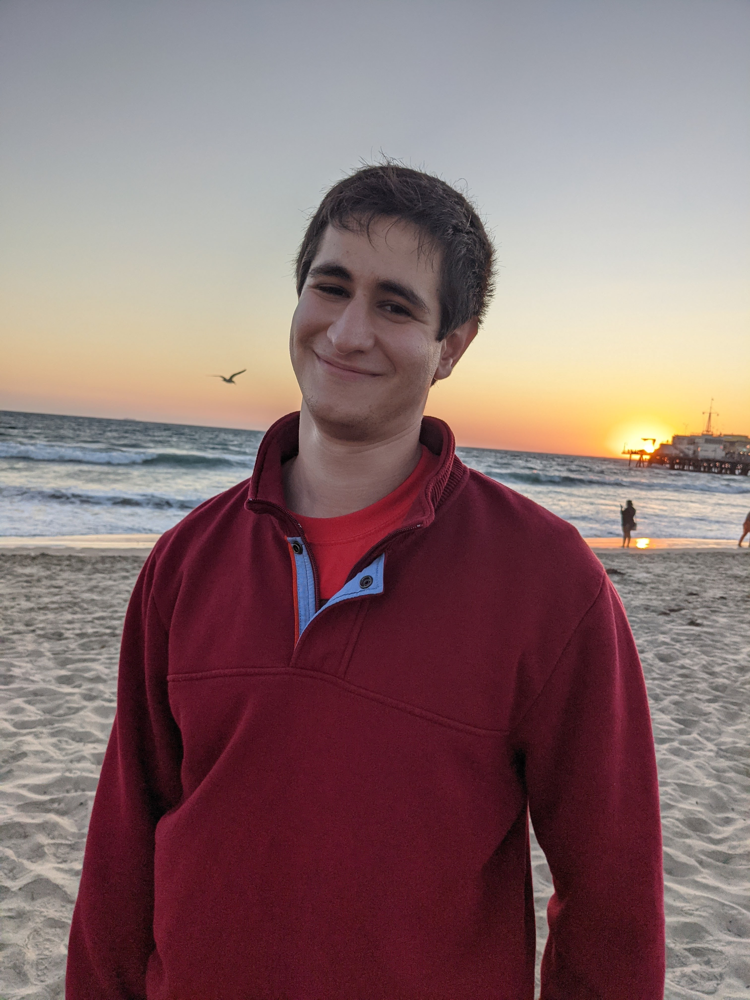

I am a fourth year graduate student at the University of California, Los Angeles pursuing a PhD in applied mathematics.
I am advised by Professor Deanna Needell and Professor Andrea Bertozzi.
I advanced to candidacy in May 2022!
I am interested in research projects at the intersection of mathematics and computer science. I work on stochastic iterative algorithms, numerical linear algebra, and machine learning problems.
My goal is to apply mathematical techniques and develop algorithms that have a positive impact on the world.
During the summer of 2022 I interned at Lawrence Berkeley National Lab with Pieter Ghysels
and Xiaoye Sherry Li in the scalable solvers group. We recently submitted a manuscript on our work using randomization to speed up a hierarchically semi-separable matrix compression algorithm here.
I completed my undergraduate studies at the University of Maryland, College Park graduating with a dual degree in mathematics (with high honors) and computer science (with honors). My
first and second scientific posters. My pronouns are he/him.
Contact Information
Email: yotamya@math.ucla.edu
Office: MS 6161
Teaching
I strive to make the classroom a welcoming and accessible environment for students of all backgrounds.
Yotam Yaniv, Jacob D. Moorman, William Swartworth, Thomas Tu, Daji Landis, Deanna Needell, "Selectable set randomized Kaczmarz." Numerical Linear Algebra with Applications (2022): e2458.